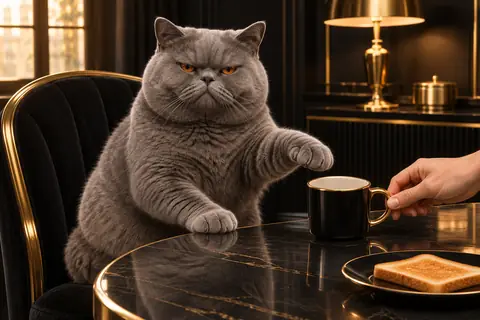

Koci Notatnik / Kocie opowieści
Degustacje Jego Mruczności · 5 min czytaniaCo jesz? A co pijesz? Moja łapa jest firmową łyżeczką.
Kochani, mój człowiek ma osobliwy zwyczaj: przygotowuje jedzenie i zamierza zjeść je sam. Napoje też próbuje zachować dla siebie. Na szczęście mam nos, łapę i zerowe poszanowanie dla tak źle prowadzonej restauracji.

Sam wybrałem tego człowieka. Miał mieszkanie, kciuki i skłonność do jedzenia pięciu różnych rzeczy, kiedy ja dostawałem jedną miskę. Uznałem, że to kwestia niedopatrzenia. Rozpocząłem nadzór nad gastronomią.
On nazywa to „nie możesz mi dać spokojnie zjeść?”. Ja nazywam to obsługą z osobistym zainteresowaniem właściciela.
Co jesz? Pytam jako kierownik tego mieszkania.
Usiadł przy stole. Przede mną talerz, filiżanka i człowiek wyglądający, jakby naprawdę wierzył w możliwość samotnego śniadania.
Powoli wystawiłem nos nad krawędź.
— To nie dla ciebie.
Nie pytałem, dla kogo. Pytałem, co. Proszę nie utrudniać kontroli.
Przesunął talerz. Ja przesunąłem głowę. Przesunął go znowu. Nagle śniadanie miało choreografię, a on — pierwszy trening tego dnia.
Kochani, są influencerzy od restauracji. Ja recenzuję wszystko, co ten człowiek próbuje donieść do ust. Zasięg lokalny. Wpływ na życie ogromny.
Kawa, herbata, woda. Wszystko wymaga łapowego odbioru.
Potem zobaczyłem kubek.
Wsunąłem łapę do pustego. W porządku. Ceramika przyjęta. Brak zawartości zgłosiłem spojrzeniem, po którym normalnie uruchamia się infolinię.
Do drugiego człowiek nalał herbaty. Podniosłem łapę.
— Nawet nie próbuj.
Przecież dopiero się przedstawiam. To jest moja firmowa łyżeczka.
Odsunął herbatę, zanim zdążyłem jej dotknąć. Z kawą zrobił to samo. Wyjątkowo sprawny poranek personelu. Zastanawiałem się, czy przyszedł ktoś na zastępstwo.
W końcu znalazłem jego szklankę z wodą. Zanurzyłem końcówkę łapy, podniosłem ją i przyjrzałem się kropli. Człowiek patrzył na mnie tak, jakbym właśnie dopisał się do aktu własności.
— Serio? Teraz moja woda?
Kochany, ta woda już od kilku sekund ma konsultanta.
Dlaczego kot wkłada łapę do kubka?
Samo sięganie łapą nie mówi, że kot chce wypić zawartość. Może sprawdzać płyn lub naczynie, interesować się ruchem wody albo próbować dosięgnąć tego, co jest w środku. Znaczenie ma sytuacja; nie da się odczytać jednej intencji z jednego gestu.
W moim literackim przypadku chodzi oczywiście o standardy. Człowiek zamawia kubki z napisem „nie rozmawiaj ze mną przed kawą”, a potem dziwi się, że komunikuję się ręcznie.
Łapą. Wypadałoby wreszcie opanować terminologię.
Właściwie każde naczynie jest podejrzane. Kubek? Sprawdzam. Szklanka? Sprawdzam. Miseczka, z której człowiek je zupę? Dlaczego on ma obiad w moim formacie?
Zupę też zdążył odsunąć. Rośnie nam specjalista.
Dlaczego chcę próbować wszystkiego, co je człowiek?
Ludzkie jedzenie może przyciągać kota zapachem. Zainteresowanie talerzem nie oznacza jednak, że jego zawartość jest bezpieczna albo potrzebna w kociej diecie.
On jadł kanapkę i wzdychał, że nie ma czasu na nic porządnego. Ja podszedłem, żeby pomóc mu w ocenie jakości. Nie docenił. Trudno współpracować z kimś, kto odmawia bezpłatnej recenzji, a później przez pół godziny czyta opinie o opiekaczu.
— Masz swoje jedzenie.
Ty też masz swoje, a jednak oglądasz cudze obiady w internecie. Nie udawaj, że nie rozumiesz tej branży.
Kawa i herbata: tu kończy się kocia recenzja.
Kawy i herbaty zawierających kofeinę nie podajemy kotu. Kofeina jest toksyczna dla kotów; gorący napój grozi też oparzeniem. Dodanie mleka nie usuwa kofeiny. Nie zakładaj również, że dowolny napar ziołowy jest bezpieczny — liczy się jego skład.
Dlatego mój człowiek ma zabezpieczać napoje, nawet gdy ja robię minę skandalicznie niedofinansowanego arystokraty. Moje oburzenie jest przejściowe. Zdrowie ma pierwszeństwo przed materiałem na relację.
Do picia dostaję świeżą wodę we własnym naczyniu. Do oceniania — całe jego życie. Naprawdę mam wystarczająco dużo zajęć.
Co zrobić, jeśli kot zamoczył łapę w kawie lub herbacie?
Zabierz napój, nie pozwól kotu zlizać go z futra i ostrożnie spłucz zabrudzoną łapę letnią wodą. Przy podejrzeniu oparzenia skontaktuj się pilnie z weterynarzem.
Jeśli kot napił się napoju z kofeiną lub zlizał go z łapy, zadzwoń od razu do lekarza weterynarii. Podaj rodzaj napoju, przybliżoną ilość, czas zdarzenia i masę kota. Ryzyko zależy od dawki i produktu. Nie czekaj na objawy i nie wywołuj wymiotów domowymi sposobami.
Niepokój, wymioty, drżenia lub drgawki wymagają pilnej pomocy. W tej części nie opieramy się na moim talencie do udawania, że nic się nie stało.
Jak zjeść śniadanie bez udziału kociej komisji?
Nie zostawiaj jedzenia i napojów bez nadzoru. Zaproponuj kotu jego własny posiłek lub porcję karmy w zabawce na jedzenie, w ramach dziennej porcji. Domownicy i goście powinni trzymać się tych samych zasad, zamiast częstować spod stołu.
Mój człowiek przygotował mi miejsce obok i własną porcję. W końcu. Najwyraźniej pojął, że w restauracji dobrze jest obsłużyć również właściciela.
Usiadłem. On wziął pierwszy kęs. Ja spojrzałem. On zastygł.
— Przecież już masz.
Spokojnie, kochany. Teraz oceniam sposób podania.
Pytania do Jego Mruczności
- Czy kawa bezkofeinowa jest dla kota?
- Nie traktuj jej jako kociego napoju. Może zawierać resztkową kofeinę i dodatki. Woda ma zdecydowanie prostszy skład.
- Czy mogę pozwolić kotu lizać pusty talerz?
- Resztki sosu czy przypraw nadal mogą być szkodliwe, np. jeśli zawierają cebulę lub czosnek. Pusty dla człowieka nie zawsze znaczy czysty dla kota.
- Każda łapa w kubku oznacza pragnienie?
- Nie. Nie stawiaj diagnozy po jednym geście. Jeśli kot nagle dużo więcej pije albo zmienia się jego apetyt, omów to z weterynarzem.
Po śniadaniu człowiek zapytał, czy jestem zadowolony. Spojrzałem na niego moją brytyjską twarzą członka komisji, który właśnie usłyszał „na razie nie mamy budżetu”.
Oczywiście, że byłem. Ale nie po to wybrałem sobie niewolnika, żeby przestał się starać.
Co ma zapamiętać Twój człowiek
- Kawę, herbatę i gorące napoje trzymaj poza zasięgiem kota. Nie zostawiaj kubka bez nadzoru.
- Łapa w naczyniu nie dowodzi głodu ani pragnienia. Zapewnij osobną, świeżą wodę.
- Nie częstuj przypadkowymi resztkami; podawaj kocią karmę, pilnując dziennej porcji.
- Po zabrudzeniu łapy napojem zabezpiecz ją przed wylizywaniem i usuń płyn. Po połknięciu kofeiny dzwoń do weterynarza.
- Nie wywołuj wymiotów w domu. Przy oparzeniu, drżeniach lub drgawkach szukaj pilnej pomocy.